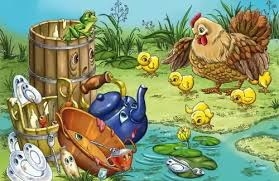
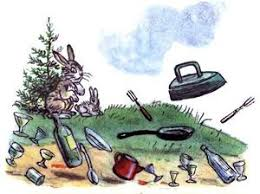

1 / 3

Caption Text
2 / 3

Caption Two
3 / 3

Caption Three
Скачет сито по полям, А корыто по лугам. За лопатою метла Вдоль по улице пошла. Федорино горе - картинка 1 Топоры-то, топоры Так и сыплются с горы. Испугалася коза, Растопырила глаза: «Что такое? Почему? Ничего я не пойму». 2 Но, как чёрная железная нога, Побежала, поскакала кочерга. И помчалися по улице ножи: «Эй, держи, держи, держи, держи, держи!» И кастрюля на бегу Закричала утюгу: «Я бегу, бегу, бегу, Удержаться не могу!» Федорино горе - тарелки убегают Вот и чайник за кофейником бежит, Тараторит, тараторит, дребезжит... Утюги бегут покрякивают, Через лужи, через лужи перескакивают. А за ними блюдца, блюдца - Дзынь-ля-ля! Дзынь-ля-ля! Вдоль по улице несутся - Дзынь-ля-ля! Дзынь-ля-ля! На стаканы - дзынь!- натыкаются, И стаканы - дзынь!- разбиваются. Федорино горе - утюг убегает И бежит, бренчит, стучит сковорода: «Вы куда? куда? куда? куда? куда?» А за нею вилки, Рюмки да бутылки, Чашки да ложки Скачут по дорожке. Из окошка вывалился стол И пошёл, пошёл, пошёл, пошёл, пошёл... Федорино горе - самовар убегает А на нём, а на нём, Как на лошади верхом, Самоварище сидит И товарищам кричит: «Уходите, бегите, спасайтеся!» И в железную трубу: «Бу-бу-бу! Бу-бу-бу!» 3 А за ними вдоль забора Скачет бабушка Федора: «Ой-ой-ой! Ой-ой-ой! Воротитеся домой!» Федорино горе - картинка 2 Но ответило корыто: «На Федору я сердито!» И сказала кочерга: «Я Федоре не слуга!» Федорино горе - корыто А фарфоровые блюдца Над Федорою смеются: «Никогда мы, никогда Не воротимся сюда!» Тут Федорины коты Расфуфырили хвосты, Побежали во всю прыть. Чтоб посуду воротить: Федорино горе - котята и тарелка «Эй вы, глупые тарелки, Что вы скачете, как белки? Вам ли бегать за воротами С воробьями желторотыми? Вы в канаву упадёте, Вы утонете в болоте. Не ходите, погодите, Воротитеся домой!» Но тарелки вьются-вьются, А Федоре не даются: «Лучше в поле пропадём, А к Федоре не пойдём!» 4 Мимо курица бежала И посуду увидала: «Куд-куда! Куд-куда! Вы откуда и куда?!» Федорино горе - курица и чайник И ответила посуда: «Было нам у бабы худо, Не любила нас она, Била, била нас она, Запылила, закоптила, Загубила нас она!» «Ко-ко-ко! Ко-ко-ко! Жить вам было нелегко!» «Да, промолвил медный таз, Погляди-ка ты на нас: Мы поломаны, побиты, Мы помоями облиты. Загляни-ка ты в кадушку - И увидишь там лягушку. Загляни-ка ты в ушат - Тараканы там кишат, Оттого-то мы от бабы Убежали, как от жабы, И гуляем по полям, По болотам, по лугам, А к неряхе - замарахе Не воротимся!» 5 И они побежали лесочком, Поскакали по пням и по кочкам. А бедная баба одна, И плачет, и плачет она. Федорино горе - Федора плачет Села бы баба за стол, Да стол за ворота ушёл. Сварила бы баба щи, Да кастрюлю, поди, поищи! И чашки ушли, и стаканы, Остались одни тараканы. Ой, горе Федоре, Горе! 6 А посуда вперёд и вперёд По полям, по болотам идёт. И чайник шепнул утюгу: «Я дальше идти не могу». И заплакали блюдца: «Не лучше ль вернуться?» И зарыдало корыто: «Увы, я разбито, разбито!» Но блюдо сказало: «Гляди, Кто это там позади?» И видят: за ними из тёмного бора Идёт-ковыляет Федора. Федорино горе - посуда в лесу Но чудо случилося с ней: Стала Федора добрей. Тихо за ними идёт И тихую песню поёт: «Ой, вы, бедные сиротки мои, Утюги и сковородки мои! Вы подите-ка, немытые, домой, Я водою вас умою ключевой. Я почищу вас песочком, Окачу вас кипяточком, И вы будете опять, Словно солнышко, сиять, А поганых тараканов я повыведу, Прусаков и пауков я повымету!» И сказала скалка: «Мне Федору жалко». И сказала чашка: «Ах, она бедняжка!» И сказали блюдца: «Надо бы вернуться!» И сказали утюги: «Мы Федоре не враги!» 7 Долго, долго целовала И ласкала их она, Поливала, умывала. Полоскала их она. «Уж не буду, уж не буду Я посуду обижать. Буду, буду я посуду И любить и уважать!» Засмеялися кастрюли, Самовару подмигнули: «Ну, Федора, так и быть, Рады мы тебя простить!» Федорино горе - картинка 3 Полетели, Зазвенели Да к Федоре прямо в печь! Стали жарить, стали печь,- Будут, будут у Федоры и блины и пироги! А метла-то, а метла - весела - Заплясала, заиграла, замела, Ни пылинки у Федоры не оставила. И обрадовались блюдца: Дзынь-ля-ля! Дзынь-ля-ля! И танцуют и смеются - Дзынь-ля-ля! Дзынь-ля-ля! А на белой табуреточке Да на вышитой салфеточке Самовар стоит, Словно жар горит, И пыхтит, и на бабу поглядывает: «Я Федорушку прощаю, Сладким чаем угощаю. Кушай, кушай, Федора Егоровна!»